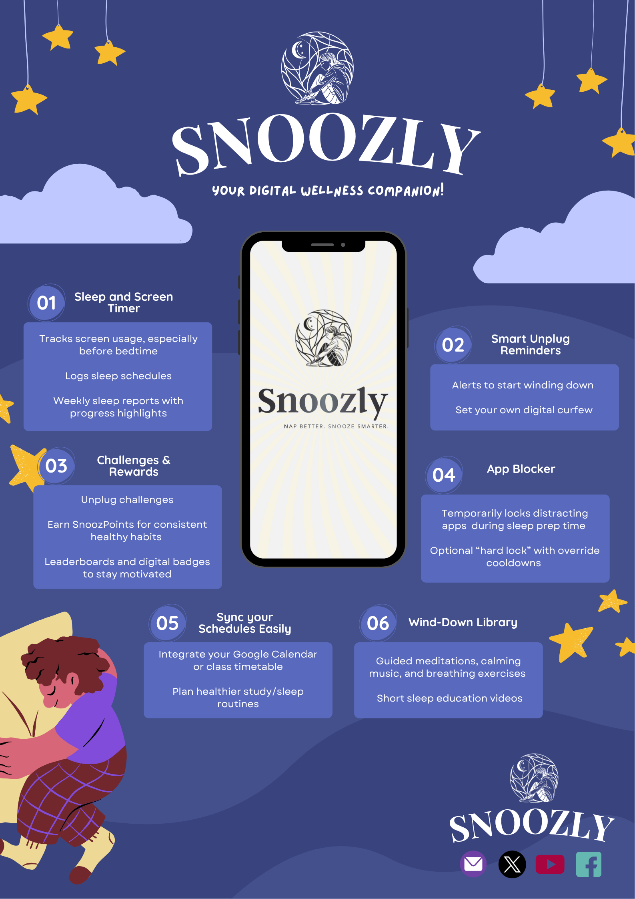

Welcome to Snoozly
Snoozly is a smart sleep assistant app developed by IT students with a Business Analytics mindset. It helps college students manage screen time and optimize their sleep patterns using data-driven insights. Our app applies analytics principles like data mining, pattern recognition, and predictive modeling to support better sleep hygiene.
Features Backed by Data
- Sleep & Screen Time Tracker
- App Lockout & Bedtime Alerts
- Guided Sleep Content Library
- Campus Leaderboards
- Personalized Sleep Recommendations
Freemium Model
Try Snoozly for free with access to essential features. Upgrade to Snoozly Pro for ₱120/month to unlock advanced analytics, integrations, and personalized insights powered by data science.
About Snoozly
Snoozly is created by aspiring IT professionals specializing in Business Analytics at FEU Tech. It is both a health-tech solution and a data-driven project that proves how analytics can improve student wellness and academic performance.
Get in Touch
Email us at aljosian@gmail.com